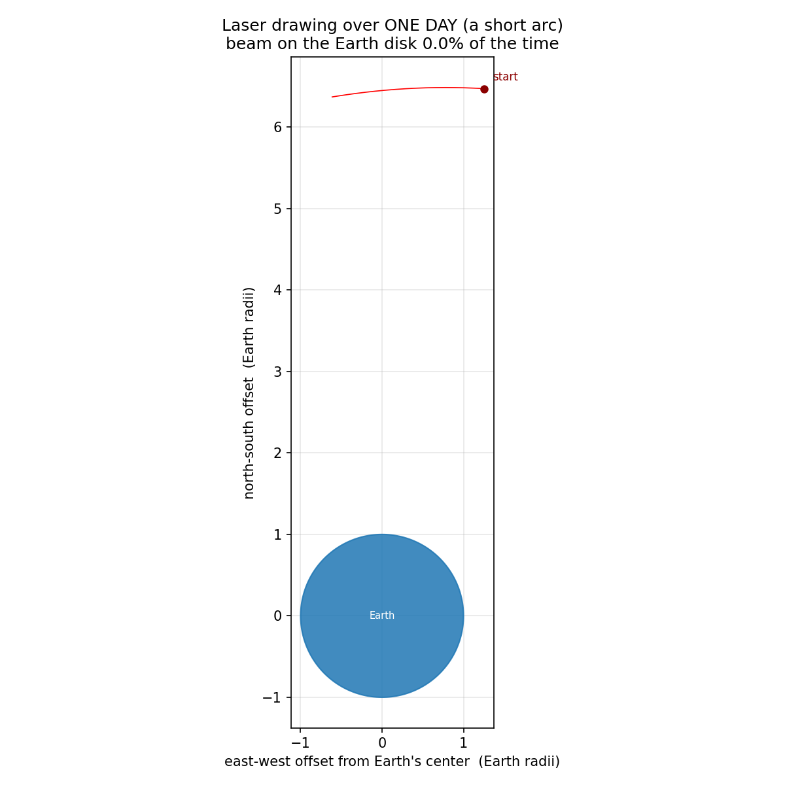
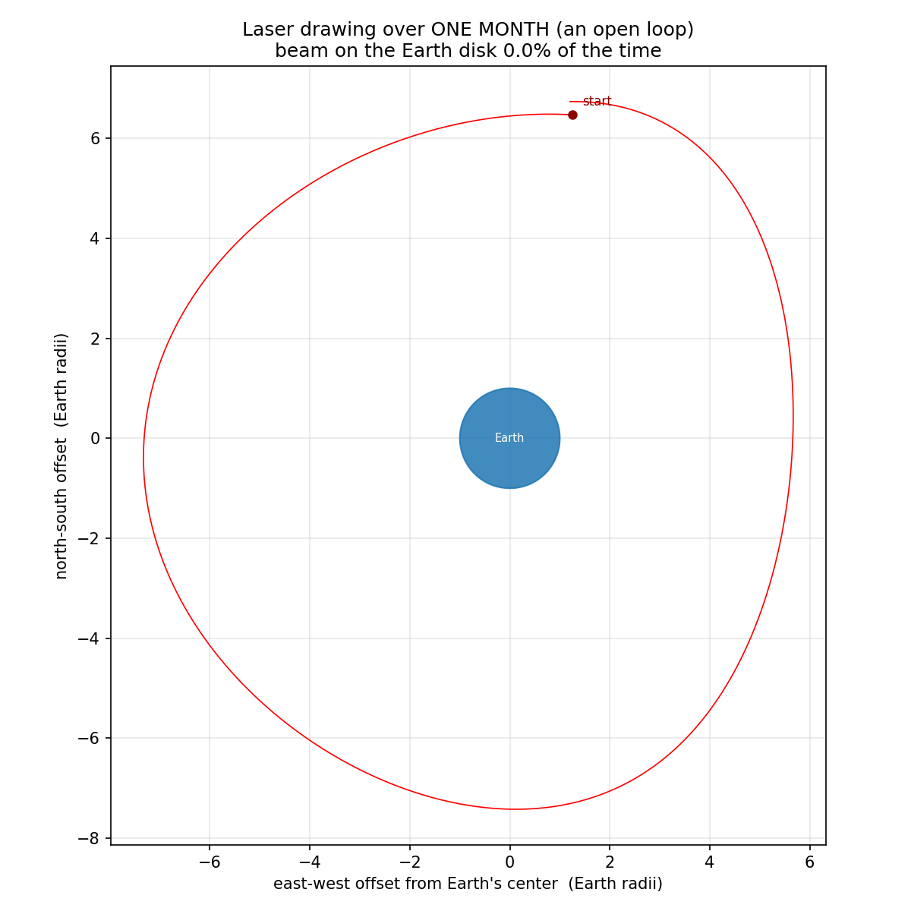
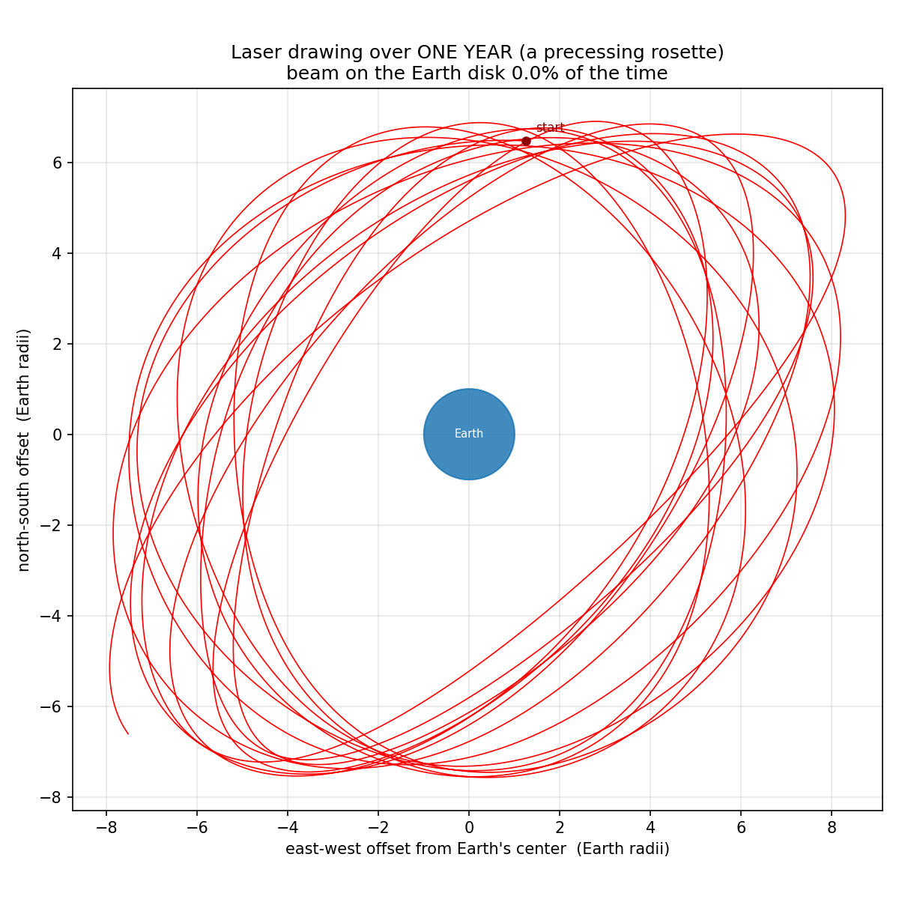
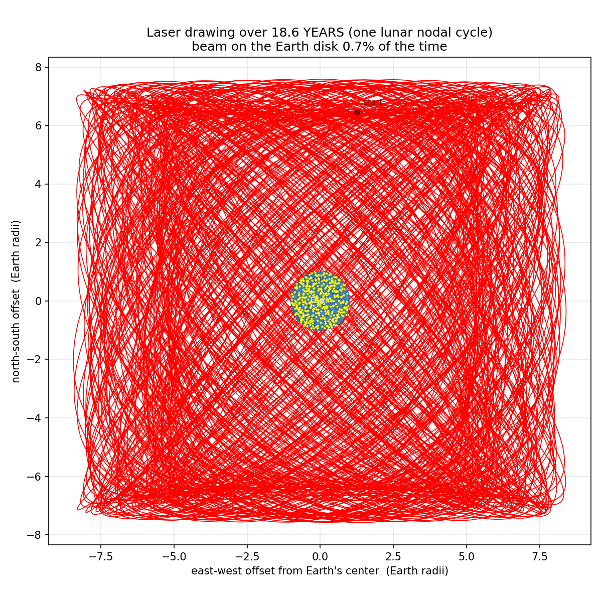
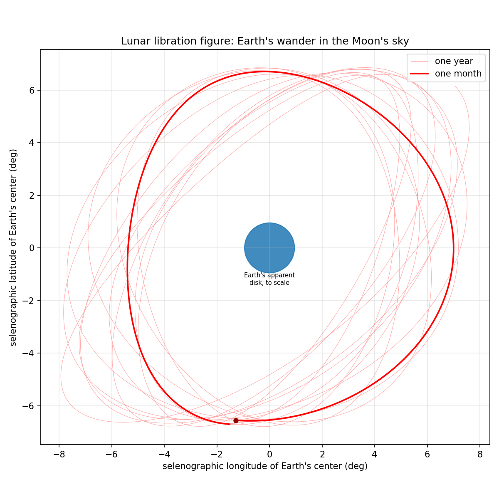
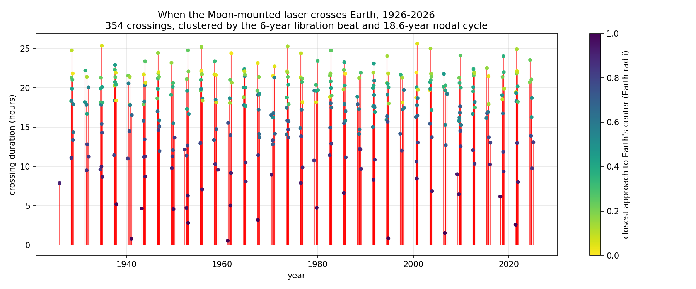
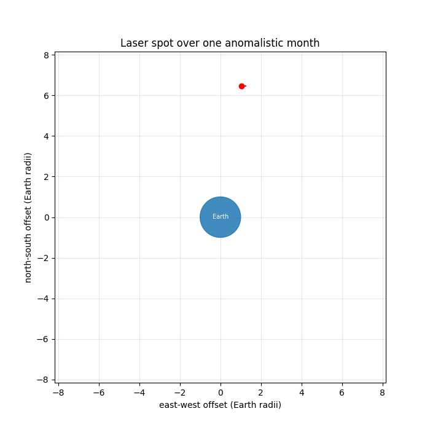
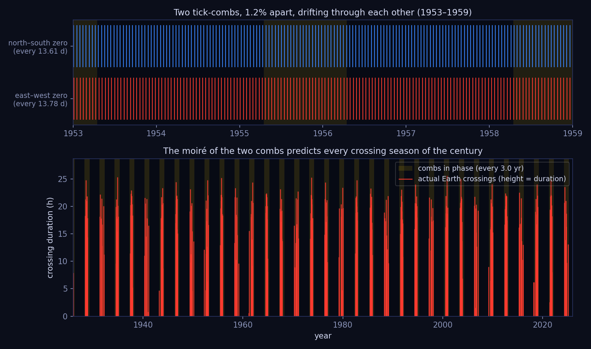
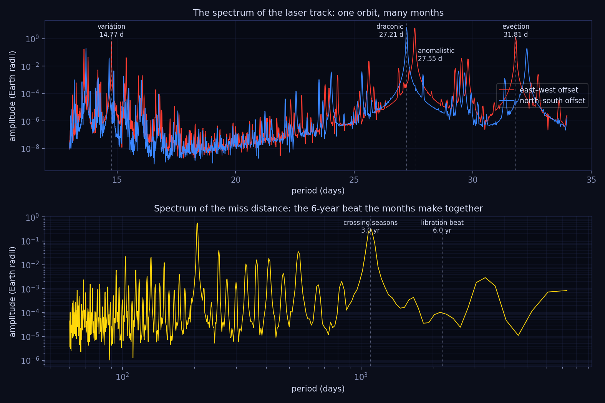
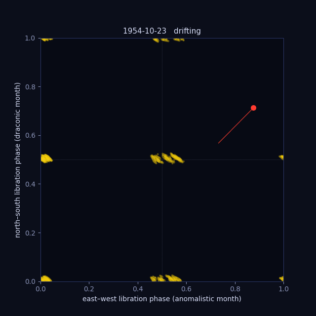

—
1926
A laser bolted to a tripod at the center of the Moon's nearside, aimed at
Earth's average position: What shape does it make in space?
Lunar libration swings the beam across a canvas
110,000 km wide — and Earth is a small target.
This animation was computed from JPL DE440 ephemerides and the DE421 lunar orientation kernel. {sources: see below}
The view is the target plane: a plane through Earth's center, perpendicular to the laser, seen from the Moon. The blue disk is Earth to scale. The red line is where the beam points, hour by hour, from real ephemeris data (1926–2026).
The Moon keeps the same face toward Earth only on average. Libration in longitude (orbital eccentricity, 27.55-day period) and in latitude (the 6.68° tilt of the lunar equator, 27.21-day period) make Earth's apparent position wander by up to ±8° — about ±8.5 Earth radii at lunar distance. Because the two periods differ slightly, the monthly loop precesses with a ~6-year beat, and the whole figure cycles with the 18.6-year regression of the lunar nodes. Direct hits come in seasons: a few months of roughly fortnightly crossings, then years of nothing.







Each tile is one calendar month of the laser's drawing, January 2024 through December 2025. All 24 share the same scale — the full ±11 Earth-radii canvas the beam ever sweeps, with Earth's disk (blue) to scale at the center — so the loops' changing size, tilt and drift are real. Hover a tile for its month.
There is only one real period here — the Moon's orbit, 27.32 days against the stars. Every other "month" is the same lap measured against a moving finish line, and the whole pattern above is the interference between them.
| Month | Length | Finish line | …which moves once per |
|---|---|---|---|
| sidereal | 27.322 d | the stars | — (fixed) |
| draconic | 27.212 d | orbit's node | 18.61 yr (backwards) |
| anomalistic | 27.555 d | perigee | 8.85 yr |
| synodic | 29.531 d | the Sun's direction | 1 yr |
The beats between these nearly-equal periods generate every famous lunar cycle. Draconic × anomalistic beat in 6.0 years — that's why the rosette precesses and why Earth crossings come in seasons every ~3 years. Synodic × anomalistic beat in 411.8 days — the "full moon cycle" that schedules supermoons. And the showstopper: 223 synodic = 6585.32 d, 242 draconic = 6585.36 d, 239 anomalistic = 6585.54 d. Three different months agree to within hours over 18 years — the Saros, why eclipses repeat in series, known to the Babylonians and geared into the Antikythera mechanism. (The Saros, 18.03 yr, is not the 18.61-yr nodal cycle that frames this page — they're neighbors by coincidence.)
This is how astronomers find pulsars: chop a long signal into pieces of a trial length and stack them. At an arbitrary period the stack is mush — but if the period is true, every cycle lines up and vertical structure snaps into focus. Below, the full 100-year laser track (876,600 hourly samples), folded by a period you control. Drag the slider slowly through 27.21 d with the north–south channel, or try the miss-distance channel at the 6-year beat to see the crossing seasons stack up.
phase within the folding period → · each row is one cycle, 1926 (top) to 2026 (bottom)


